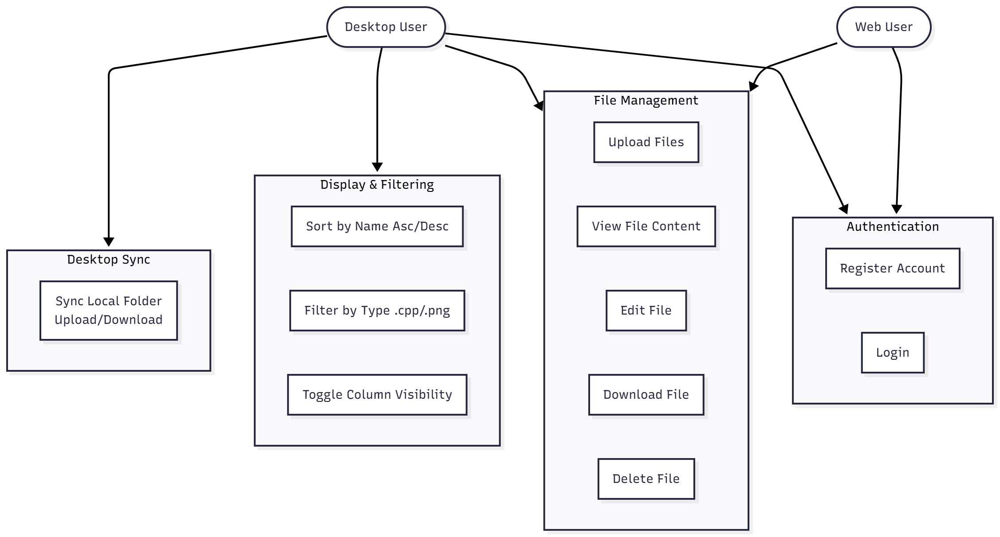
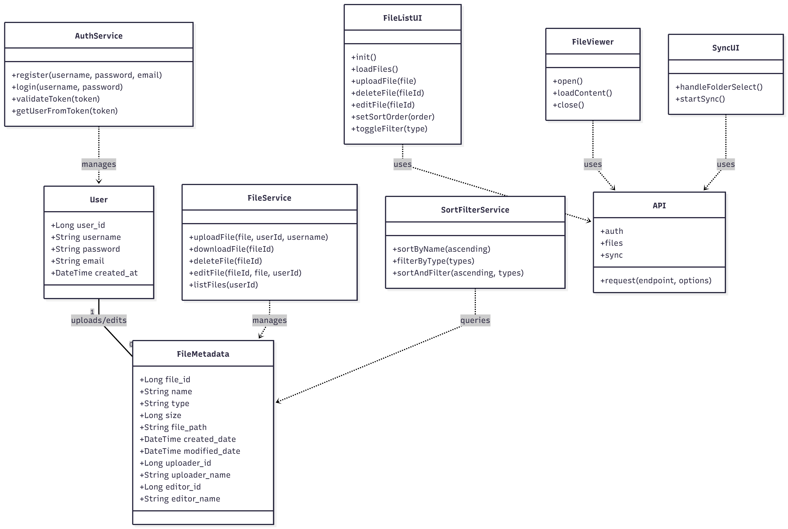
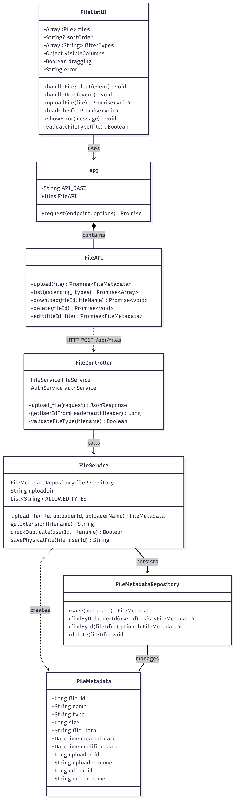
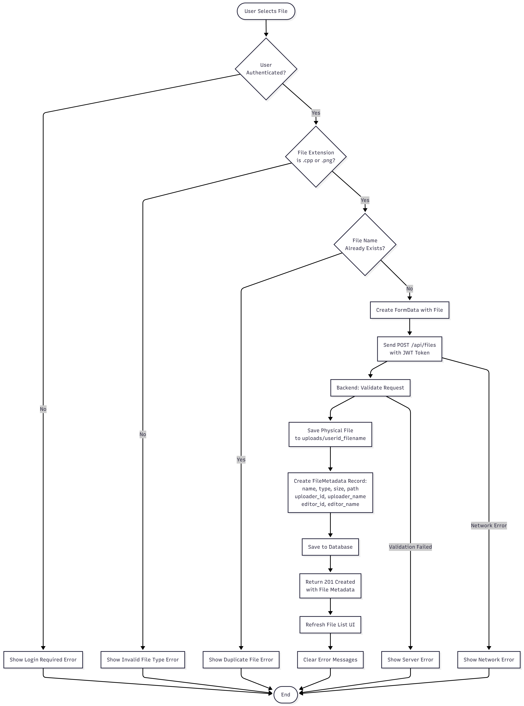
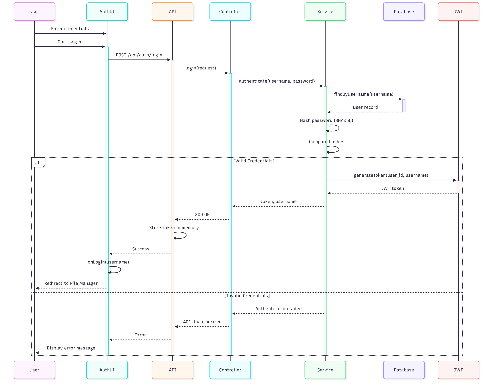
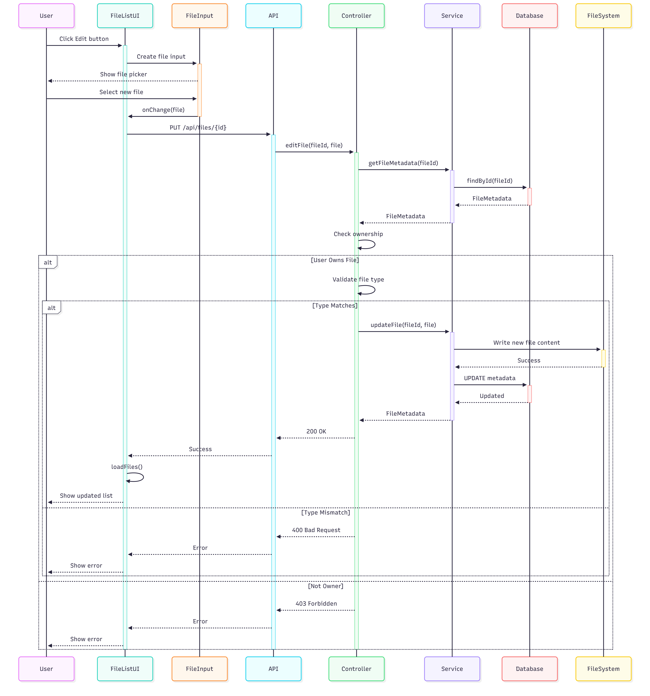
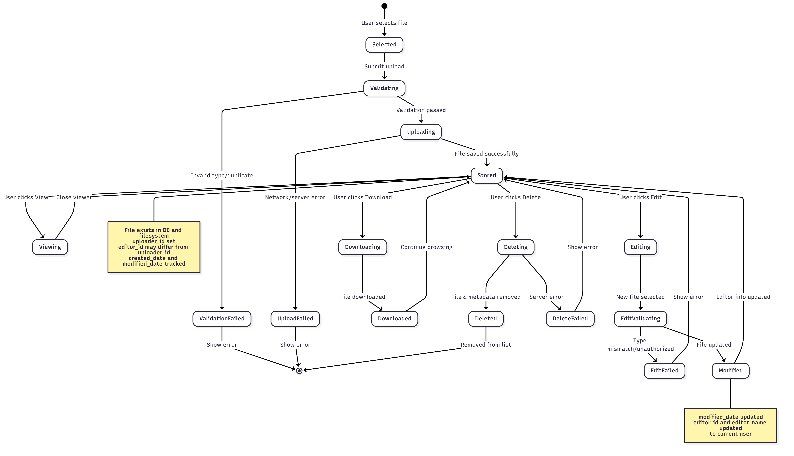
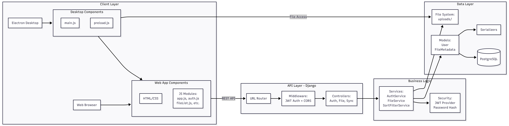
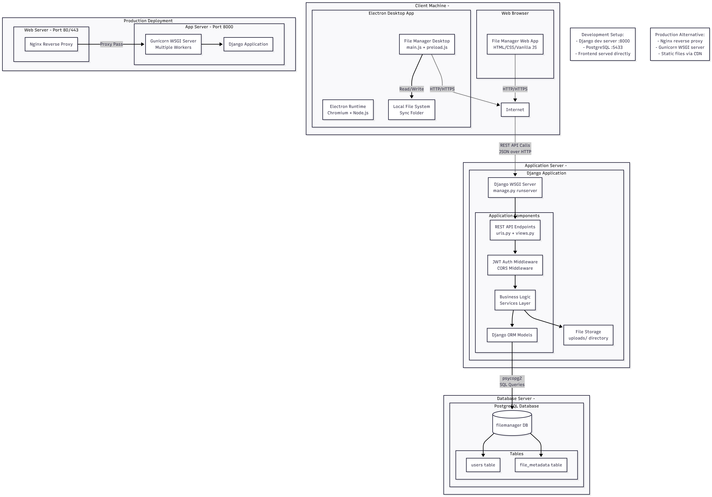

Індивідуальне завдання етап 1 звіт
UML-специфікація
Виконавець: Єгор Крупєй
Мета роботи
Розробка UML-діаграм для системи управління віддаленою папкою з файлами (варіант 06). Система реалізує функціонал файлового менеджера з авторизацією, переглядом файлів типу .txt та .jpg, сортуванням за назвою та фільтрацією файлів типу .cpp і .png.
1. Діаграма прецедентів (Use Case Diagram)
Діаграма відображає основних акторів системи та їх взаємодію з функціональними можливостями:
- Desktop User – має доступ до синхронізації локальної папки, перегляду файлів, сортування та фільтрації;
- Web User – працює через браузер з обмеженим функціоналом (без синхронізації);
- Прецеденти: Authentication (Register Account, Login), File Management (Upload Files, View File Content, Edit File, Download File, Delete File), Display & Filtering (Sort by Name Asc/Desc, Filter by Type .cpp/.png, Toggle Column Visibility), Desktop Sync (Sync Local Folder Upload/Download).

2. Діаграми класів (Class Diagrams)
2.1. Загальна діаграма класів
Відображає основну архітектуру системи з розподілом на сервісні, модельні та UI компоненти:
- AuthService – управління реєстрацією, входом та валідацією токенів;
- User – модель користувача (user_id, username, password, email, created_at);
- FileService – операції з файлами (upload, download, delete, edit, list);
- FileMetadata – модель метаданих файлу (file_id, name, type, size, file_path, created_date, modified_date, uploader_id/name, editor_id/name);
- SortFilterService – сортування за назвою та фільтрація за типами;
- UI компоненти – FileListUI, FileViewer, SyncUI;
- API – уніфікований інтерфейс для взаємодії з сервером.

2.2. VOPC діаграма класів
Детальна діаграма класів з акцентом на взаємодію компонентів при виконанні операцій з файлами. Показує повний ланцюжок від UI до бази даних: FileListUI → API → FileAPI → FileController → FileService → FileMetadataRepository → FileMetadata. Відображає методи кожного класу та типи даних, що передаються. Ілюструє патерн Repository для роботи з даними.

3. Діаграма активності (Activity Diagram)
Описує процес завантаження файлу користувачем з усіма перевірками та можливими шляхами виконання:
- Перевірка аутентифікації користувача;
- Валідація типу файлу;
- Перевірка на дублювання імені файлу;
- Створення FormData та відправка POST-запиту;
- Збереження фізичного файлу та створення запису в базі даних;
- Оновлення списку файлів в UI;
- Обробка помилок на кожному етапі.

4. Діаграми взаємодії (Sequence Diagrams)
4.1. Діаграма послідовності: Аутентифікація
Демонструє взаємодію компонентів при вході користувача в систему: User → AuthUI → API → Controller → Service → Database. Включає хешування пароля (SHA256), генерацію JWT токена з user_id та username, збереження в localStorage та перенаправлення до File Manager. Обробляє помилку 401 Unauthorized при невалідних даних.

4.2. Діаграма послідовності: Редагування файлу
Показує процес редагування існуючого файлу: User → FileListUI → FileInput → API → Controller → Service. Включає отримання метаданих файлу, перевірку прав власності (лише власник може видаляти, але редагувати можуть усі у спільному робочому просторі), валідацію типу файлу, заміну фізичного файлу та оновлення метаданих (editor_id, editor_name, modified_date).

5. Діаграма станів (State Diagram)
Описує життєвий цикл файлу в системі:
- Selected – файл обрано користувачем;
- Validating – перевірка типу та імені файлу;
- Uploading – процес завантаження на сервер;
- Stored – файл збережено в системі, доступний для операцій;
- Viewing – перегляд вмісту файлу (лише для .txt та .jpg);
- Downloading – завантаження файлу користувачем;
- Deleting – процес видалення (лише власником);
- Editing – редагування файлу з оновленням editor_name;
- ValidationFailed, UploadFailed, DeleteFailed, EditFailed – стани помилок.
Діаграма показує, що modified_date оновлюється при редагуванні, а editor_id та editor_name змінюються на поточного користувача.

6. Діаграма компонентів (Component Diagram)
Відображає архітектуру системи на рівні компонентів:
- Client Layer: Desktop Components (main.js, preload.js в Electron), Web App Components (HTML/CSS, JS Modules: app.js, auth.js, fileList.js);
- API Layer - Django: URL Router, Middleware (JWT Auth + CORS), Controllers (Auth, File, Sync);
- Business Layer: Services (AuthService, FileService, SortFilterService), Security (JWT Provider, Password Hash);
- Data Layer: Models (User, FileMetadata), Serializers, PostgreSQL Database, File System (uploads/).
Компоненти взаємодіють через REST API з використанням HTTP/HTTPS протоколу.

7. Діаграма розгортання (Deployment Diagram)
Показує фізичне розгортання системи:
- Client Machine: Electron Desktop App (main.js + preload.js) з доступом до Local File System для синхронізації, Web Browser з File Manager Web App (HTML/CSS/Vanilla JS);
- Application Server: Django Application (Gunicorn WSGI Server з Multiple Workers), компоненти (Django WSGI Server, REST API Endpoints, JWT Auth Middleware, CORS Middleware, Business Logic Services Layer, Django ORM Models), File Storage (uploads/ directory);
- Database Server: PostgreSQL Database з таблицями users та file_metadata;
- Development Setup: Django dev server на порту 8000, PostgreSQL на порту 5433, Frontend served directly.
Клієнти взаємодіють з сервером через REST API calls (JSON over HTTP).

Висновки
Розроблено повний набір UML-діаграм для системи управління файлами варіанту 06. Діаграми покривають усі аспекти системи: функціональні вимоги (Use Case), структуру класів (Class Diagrams), поведінку (Activity, Sequence, State) та архітектуру (Component, Deployment). Особливості варіанту 06 реалізовані: перегляд .txt та .jpg файлів, сортування за назвою, фільтрація .cpp та .png. Система підтримує спільний робочий простір, де всі бачать всі файли, але видаляти може лише власник.